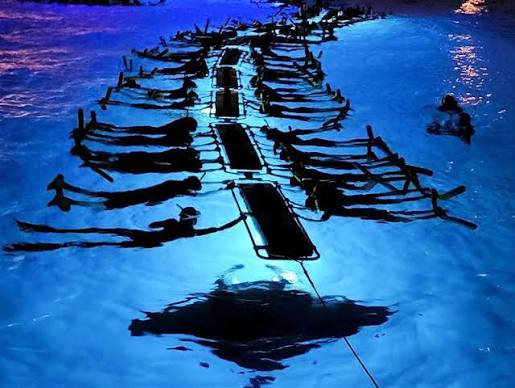

Hawaii

Manta Ray Night Snorkel
Description
Swimming with manta rays at night near Kona is one of the world's best underwater adventures, where you can safely watch these gentle giants glide through the water as they feed on tiny plankton. The tour leaves from Keauhou Harbor on a spacious boat, and the crew provides safety instructions before you enter the water with snorkeling gear and a special floating device. During the 45-minute experience, the manta rays often swim very close, giving you an unforgettable view of these amazing animals. After the snorkel, guests return to the boat to enjoy light snacks, hot cocoa, and tea. You can choose between an Early tour with a sunset view or a less crowded Late tour, but both offer the same incredible manta ray experience.
More Activities
Order Place Need to do/fill something beforehand? 1 Kona Coffee Farms ❌ Usually no reservation for simply visiting. ⚠️ Some farm tours or tastings require reservations. 2 Kealakekua Bay ⚠️ Depends on the activity. If kayaking, snorkeling with a tour, or using certain access options, you may need a reservation/permit. 3 Two Step (Hōnaunau Bay) ❌ No reservation normally needed for simply snorkeling/swimming. ⚠️ Check ocean conditions and parking/access rules. 4 Kua Bay or Hapuna Beach ❌ Usually no reservation for normal beach access. 🎟️ Hapuna has an entrance/parking fee for some visitors, so be prepared to pay. 5 Mauna Kea Summit ⚠️ Special preparation is important. The summit is at very high elevation. Check road/weather conditions and vehicle requirements before going. Some summit activities may require reservations. 6 Hawaii Volcanoes National Park 🎟️ Entrance fee/pass may be required. ❌ No special form is normally needed for a normal visit. ⚠️ Check current volcano conditions, road closures, and park alerts. 7 Punaluʻu Black Sand Beach ❌ No reservation normally needed for a regular visit. ⚠️ Follow posted rules and avoid disturbing sea turtles. 8 Hilo Farmers Market ❌ No reservation or form needed. Just go during operating hours and bring money/card for vendors.
Recommended Order
Kona Coffee Farms → Kealakekua Bay → Two Step → Kua Bay/Hapuna Beach → Mauna Kea Summit → Hawaii Volcanoes National Park → Punaluʻu Black Sand Beach → Hilo Farmers Market
Best Transportation
The best way to get around Hawaii is renting a car for total freedom, though you can use public buses or ride-shares if you stay in city areas. Transportation choices depend heavily on which island you visit and your travel style.
Best Time to Go
The best time to experience the Manta Ray Night Snorkel in Kona, Hawaii, is during the peak summer and fall months (April through October) when ocean conditions are calm, and water temperatures are a warm 77–82°F. For the best viewing, book an early sunset departure and target the days around a new
Worst Time to Go
January and February, when heavy swells, high winds, and rough ocean conditions frequently force tour operators to cancel trips or navigate uncomfortably choppy waters.
Rules
To protect the animals and ensure safety during a manta ray night snorkel, you must stay horizontal at the surface while holding a lighted board, keep your legs and fins quiet, never touch or chase the rays, and follow all instructions from your tour guides immediately